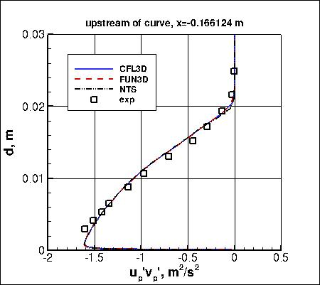
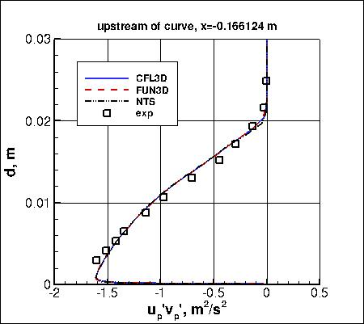

|
Langley Research CenterTurbulence Modeling Resource |
Jump to: SA Results, SA-RC Results, SSTm Results, SSG/LRR-RSM-w2012 Results, Wilcox2006-klim-m Results, EASMko2003-S Results, K-e-Rt-RC Results, GLVY-RSM-2012 Results
Return to: 2D Convex Curvature Boundary Layer Case Intro Page
Return to: Turbulence Modeling Resource Home Page
2D Convex Curvature Boundary Layer Validation Case
SST-RCm Model Results
Link to SST-RCm equations
Previously on this page the results were reported as SST-RC solutions, but more properly they should be referred
to as SST-RCm. Essentially no difference is expected.
Note that thorough
grid studies were not performed for validation cases such as this one.
Some effort was made to ensure reasonable grid resolutions, but there may still be
small noticeable discretization errors. Therefore, these validation results shown should be considered
representative, but not "truth."
Above SST-RCm results are from three independent
CFD codes: CFL3D and FUN3D (NASA LaRC, USA), and NTS (NTS, Russia).
All three codes used freestream turbulence intensity=0.083% and freestream turbulent viscosity (relative to laminar)=0.009
(additional details can be found in the CFL3D User's Manual, Appendix H).
Please read note 5 on Notes on running CFD page.
They all used the same 513x193 grid.
All three yield nearly identical results for all quantities.
For the station at x=-0.166124 m, the parallel velocity component
up is the velocity parallel
to the wall (which is canted at 30 deg relative to Cartesian coordinates),
and the up'vp' is taken with respect to the wall-normal
and wall-parallel directions. The formulas for computing these rotated quantities from
Cartesian quantities are:
Although the main focus of this case is on the bottom (convex) wall region, top (concave) wall
skin friction results from the 2-D computation are also shown in the last plot above.
Note that this model is currently assigned
MRR Level 2 for the purposes of this website.
This is because the model has not yet been applied to a verification case, including complete grid convergence study.
The results on this page are therefore not necessarily
reliable until such a verification can be completed.
Note that the wall-shapes in the curved region have (unintentional) small oscillations in the
second-derivative of the provided grids;
these cause small oscillations in Cp and Cf near their peaks (not easily visible
at the scales of the plots above).
Note that these are compressible code results
at "essentially incompressible" conditions of M=0.093.
There may be a very small influence of compressibility.
Only the CFD data files from CFL3D are given here for reference:
smits_cp_cfl3d_sstrc.dat,
smits_cf_cfl3d_sstrc.dat,
smits_u_upstream_cfl3d_sstrc.dat,
smits_uv_upstream_cfl3d_sstrc.dat,
smits_u_cfl3d_sstrc.dat (updated 5/27/2015),
smits_uv_cfl3d_sstrc.dat (updated 5/27/2015), and
smits_cftopwall_cfl3d_sstrc.dat.
A typical CFL3D input file is:
smits_cfl3d_typical_sstrc.inp.
A typical FUN3D input file is:
fun3d.nml_typical_sstrc.
Jump to: SA Results,
SA-RC Results,
SSTm Results,
SSG/LRR-RSM-w2012 Results,
Wilcox2006-klim-m Results,
EASMko2003-S Results,
K-e-Rt-RC Results,
GLVY-RSM-2012 Results Return to: 2D Convex Curvature Boundary Layer Case Intro Page Return to: Turbulence Modeling Resource Home Page
Recent significant updates: Responsible NASA Official:
Ethan Vogel
 

where theta = 30 deg. The distance d is taken across the channel at this upstream location.
05/27/2015 - replaced files smits_u_cfl3d_sstrc.dat, smits_uv_cfl3d_sstrc.dat
Page Curator:
Clark Pederson
Last Updated: 03/13/2025